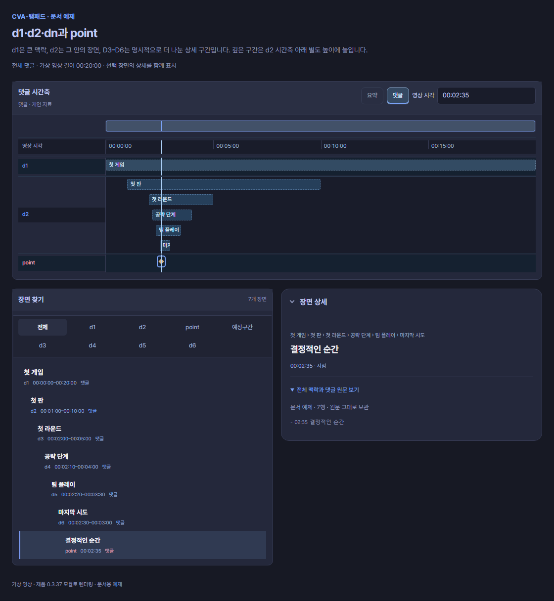
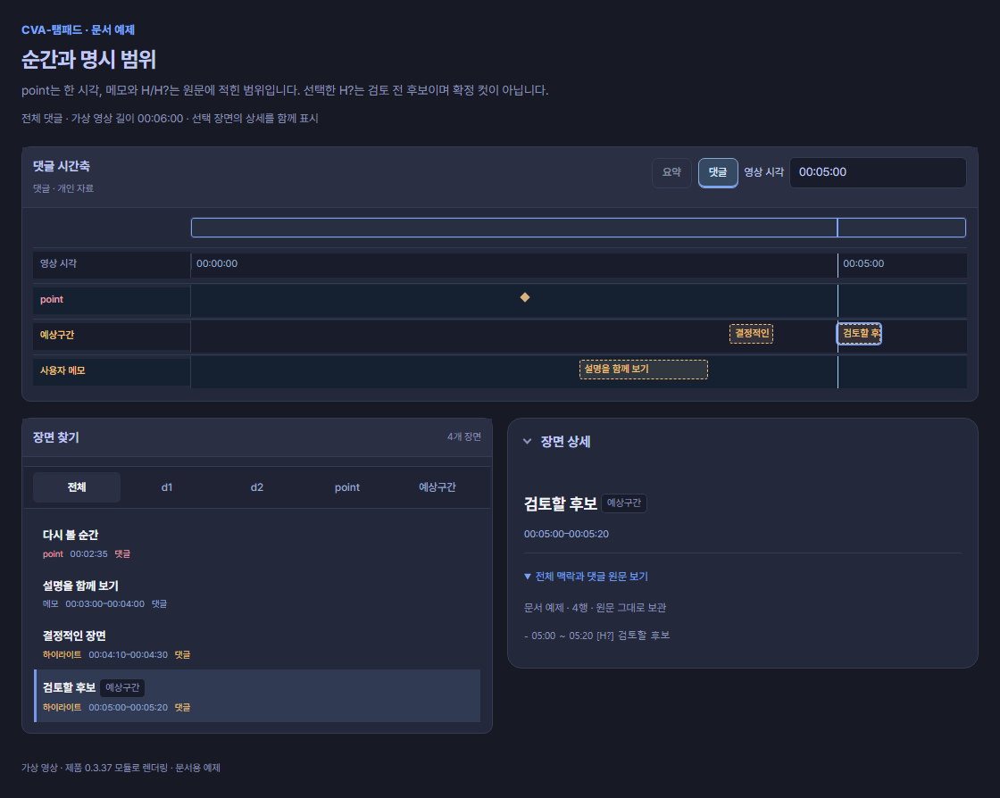
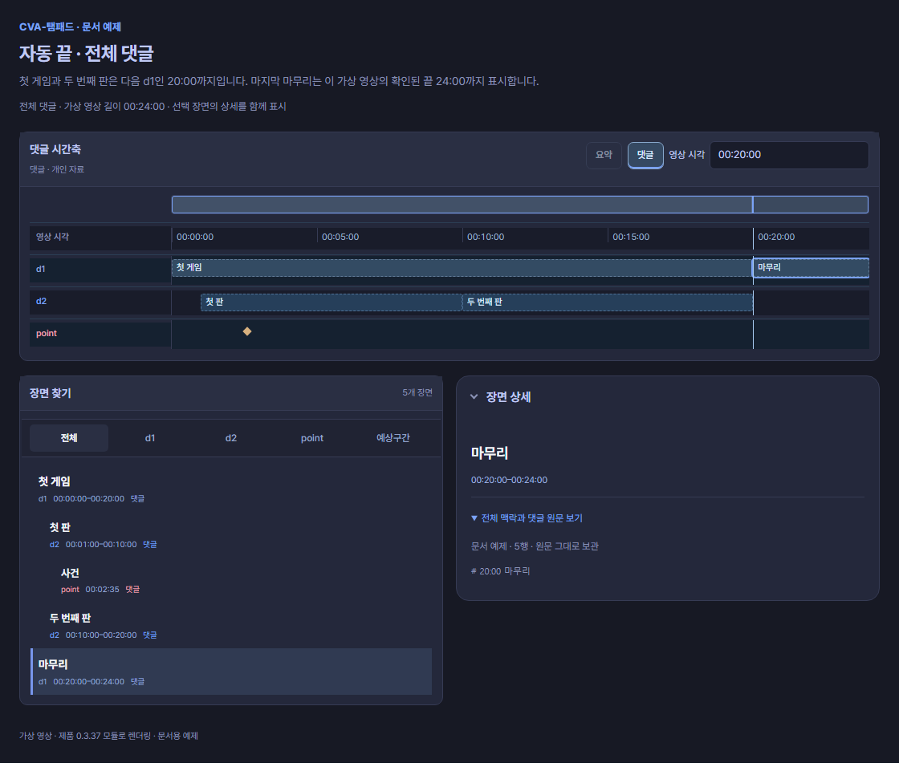
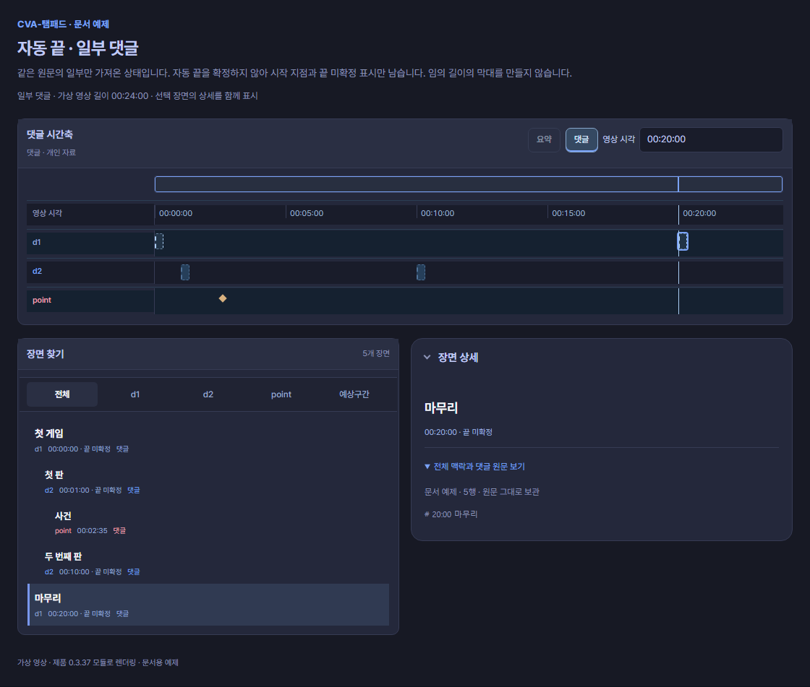

시간축 용어
CVA는 다시보기의 큰 흐름 → 장면 → 다시 볼 순간 → 검토할 범위를 구분합니다. 댓글을 가져오면 이 구분에 맞춰 시간축에 표시합니다. 같은 세로선은 현재 영상 시각이며, 각 행을 함께 읽는 기준입니다.
| 먼저 찾을 말 | 한 줄 뜻 |
|---|---|
| d1 · d2 · dn | 큰 흐름과 그 안의 장면을 나누는 목차 깊이 |
| point | 바로 이동해 볼 한 시점 |
| 예상구간 | 시작과 끝을 정해 컷으로 검토할 범위 |
| 자동 끝 | 시작만 적은 이야기 구간의 끝을 확인 가능한 경계로 계산하는 규칙 |
자료를 준비하는 방법은 요약과 JSON 가져오기, 실제 표기법은 구간과 강조에서 이어서 확인하세요.
d1 · d2 · dn은 목차 깊이입니다
| 표시 | 뜻 | 예 |
|---|---|---|
| d1 | 방송의 큰 활동이나 이야기 흐름 | 한 게임 전체, 저챗, 노래 시간 |
| d2 | d1 안에서 따로 찾아볼 단계·판·장면 | 첫 판, 두 번째 판 |
| dn 상세 구간 | 더 깊이 나눈 하위 구간. n은 목차 깊이 | d3 라운드 → d4 세부 단계 |
숫자는 중요도·재미 순위·영상 번호가 아닙니다. 명시 제목은 #부터 ######까지 d1–d6을 지원하며, 바로 위 단계 부모가 있어야 합니다. 현재 시간축의 d3–d6은 d2 행 안에서 깊이별로 아래에 배치됩니다. 미리보기와 장면 목록에는 각 항목의 실제 dn을 표시합니다.
CVA 요약의 기본 목차는 d1·d2입니다. d3–d6은 이 댓글·개인 자료에서 더 상세히 나눌 수 있는 깊이이며, 모든 요약이 여섯 단계로 작성된다는 뜻은 아닙니다.
# 00:00 ~ 20:00 첫 게임
## 01:00 ~ 10:00 첫 판
### 02:00 ~ 05:00 첫 라운드
#### 02:10 ~ 04:00 공략 단계
##### 02:20 ~ 03:30 팀 플레이
###### 02:30 ~ 03:00 마지막 시도
- 02:35 결정적인 순간
읽는 순서: 큰 흐름인 d1에서 위치를 잡고, d2와 더 깊은 하위 구간으로 좁힙니다. point는 이 구간들을 이해한 뒤 바로 찾아갈 한 시각입니다. 여러 깊이가 있어도 각각 다른 영상을 뜻하지 않습니다.
point는 여기서부터 보는 한 시점입니다
point는 여기서부터 보면 된다는 이동 지점입니다. 길이가 없으며, 앞 맥락을 이해하기 위한 시작일 수도 있어 사건의 절정 시각과 반드시 같지는 않습니다. 마름모는 순간, 별은 작성자가 강조한 순간입니다. 별이 있다고 승인된 컷이나 높은 점수로 바뀌지는 않습니다.
point 여러 개 사이를 자동으로 재생 범위로 채우지 않습니다. 시작·끝이 필요한 내용은 구간과 강조의 명시 범위를 사용하세요.
예상구간은 컷으로 검토할 범위입니다
예상구간 행은 컷으로 검토해 볼 시작·끝 범위를 보여줍니다. 현재 화면에서는 [H] 하이라이트와 [H?] 예상 후보가 이 행을 함께 사용합니다.
CVA에서 Highlight는 함께 봤을 때 내용을 이해하고 추출할 가치를 느낄 수 있는 선택 구간입니다. 관련된 순간과 필요한 앞뒤 맥락을 묶을 수 있으며, 길이나 point 개수는 고정하지 않습니다. 떨어진 여러 원본 구간을 하나의 항목으로 담을 수도 있습니다. 다만 댓글의 [H]는 작성자가 제안한 범위이므로 실제 영상을 확인해 컷으로 선택하는 판단과 구별합니다.
| 표기·상태 | 해석 | 확인할 것 |
|---|---|---|
[H] | 작성자가 지정한 하이라이트 범위 | 댓글의 제안이며 관리자가 승인한 컷은 아님 |
[H?], [예상] | 검토 전 후보 범위 | 원문의 후보 표기를 확인. 현재 시간축은 [H]와 같은 행·모양 사용 |
별·BEST | 작성자가 강조한 항목 | 강조는 구간 역할·승인과 별개 |
| 담은 컷 | 사용자가 컷 작업에 직접 담은 결과 | 시작·끝·출처를 별도로 확인 |

같은 행에 있어도 의미는 다릅니다. 위 예제의 04:10–04:30은 [H], 05:00–05:20은 [H?]입니다. 현재 행의 색이나 위치만으로 둘을 구별할 수 없으므로, 선택한 항목의 전체 맥락과 댓글 원문 보기에서 [H?]를 확인하세요. 구간 막대의 제목이 좁아서 안 보이면 장면 목록과 상세를 함께 읽습니다.
자동 끝과 예상구간은 다릅니다
자동 끝은 시작만 적은 이야기 구간의 끝을 계산하는 규칙입니다. 뒤의 같은 단계·상위 제목, 부모 끝, 확인된 영상 끝을 사용합니다. 자동으로 끝을 계산해도 d1/d2가 예상 하이라이트로 바뀌지는 않습니다. 손상된 제목 경계를 지나야 하는 끝은 미확정으로 두고, 이전 부모·합방 명단을 손상된 D1·D2 너머로 이어 붙이지 않습니다. 정상 이웃 장면과 명시 범위는 유지합니다.
# 00:00 첫 게임
## 01:00 첫 판
- 02:35 사건
## 10:00 두 번째 판
# 20:00 마무리
위는 전체 본문·영상 길이 24분이 확인된 가상 예제입니다. 첫 게임은 다음 d1인 20:00까지, 첫 판은 다음 d2인 10:00까지, 두 번째 판은 부모의 20:00까지입니다. 마지막 마무리는 확인된 영상 끝 24:00까지입니다. 02:35 사건은 그대로 point입니다.

부분 본문이면 생략된 경계를 알 수 없습니다. 위는 같은 입력을 일부만 가져옴으로 해석한 결과입니다. 끝 미확정 항목에는 닫힌 구간처럼 막대를 채우지 않습니다. 알 수 없는 영상 길이·누락된 경계에서도 끝이 미확정일 수 있으며, 이미 적은 끝은 자동 계산으로 덮어쓰지 않습니다.
다른 행도 함께 읽으세요
| 행 | 읽는 방법 |
|---|---|
| 사용자 메모 | 설명이나 참고 범위. 하이라이트·승인된 컷과 구별 |
| 편집 후보 | 편집 검토를 돕는 별도 후보 자료. 채택·승인은 별도 |
| 먼저 볼 구간 | 먼저 확인해 볼 탐색 단서 |
| 채팅량 | 불러온 채팅의 시간별 양. 재미·편집 승인 점수가 아님 |
| 시청자 클립 | 원본과 연결된 클립 위치. 시각 미확정 자료는 별도 확인 |
| 영상별 시각 행 | 원본·비교 영상의 길이와 현재 시점. 실제 같은 장면인지는 시각 맞추기로 확인 |
이 행들은 해당 자료를 불러왔을 때 나타납니다. 합방 명단·관련 인물로 공개 다시보기 후보를 조회하며, 기본 현재 명단과 전체 명단 모두 처음 12명·더보기 다음 12명으로 표시합니다. 확인된 같은 채널의 여러 VOD는 한 행에 시간순으로 놓고 빈 시간을 보존합니다. 빈 구간이나 시각 미확인 영역을 누르면 원본 영상만 이동합니다. 이름·소리 영역은 가로 스크롤 중에도 고정됩니다. 방송 기간 겹침은 같은 장면·정렬의 확정이 아니며, 일부 조회 상태도 확인하세요. 이름을 눌러 비교 영상을 여세요. 인물과 합방
화면을 크게 보려면
예제 이미지를 선택하면 원본 크기로 볼 수 있습니다. 전체 편집 화면 보기